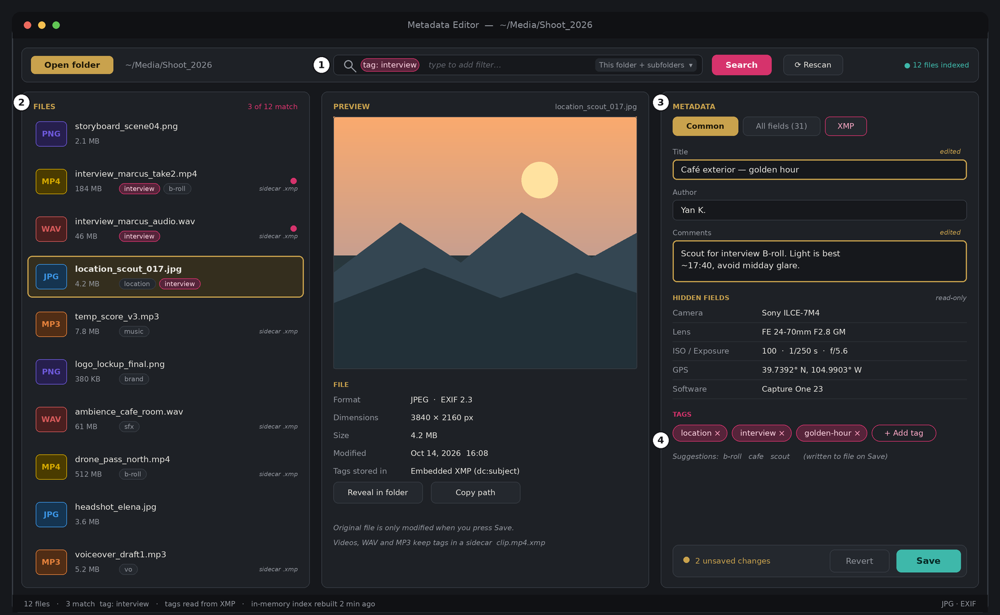

View all metadata
Common fields plus the hidden ones: camera, GPS, codec, software, and more.
Desktop app for Windows, macOS and Linux
MultiMedia Metadata Manager (QuadM) is a focused desktop file explorer for images, audio and video. Edit title, author and comments, tag your files, and search by tag across whole folders.
Download QuadM Read the user guide
Your original files are only changed when you press Save.

Common fields plus the hidden ones: camera, GPS, codec, software, and more.
Change title, author and comments. Nothing is written until you press Save.
Tags are stored in the file itself (XMP), or in a sidecar .xmp file for video and audio.
Find every file with a tag across a folder and its subfolders.
Built for media editors and anyone with a large collection of photos, music and video.